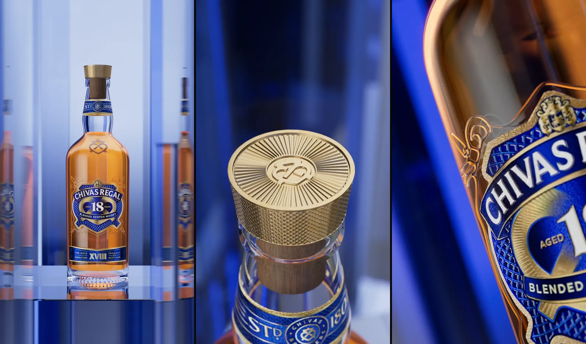
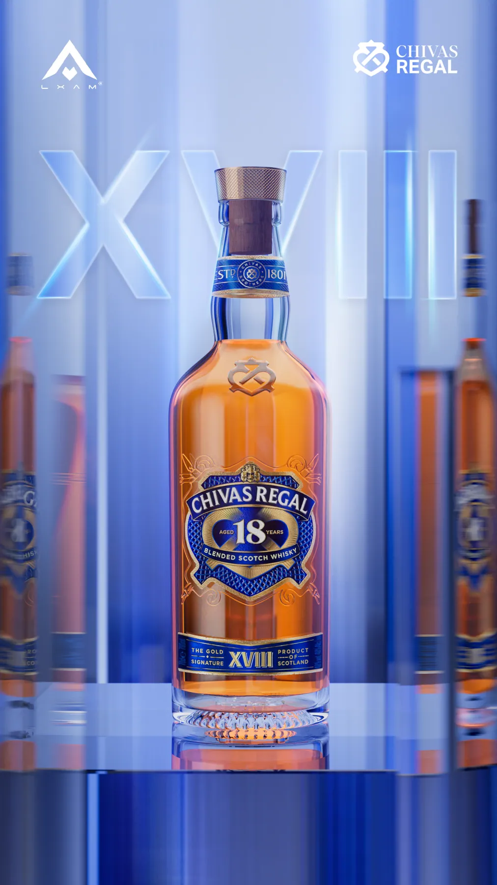
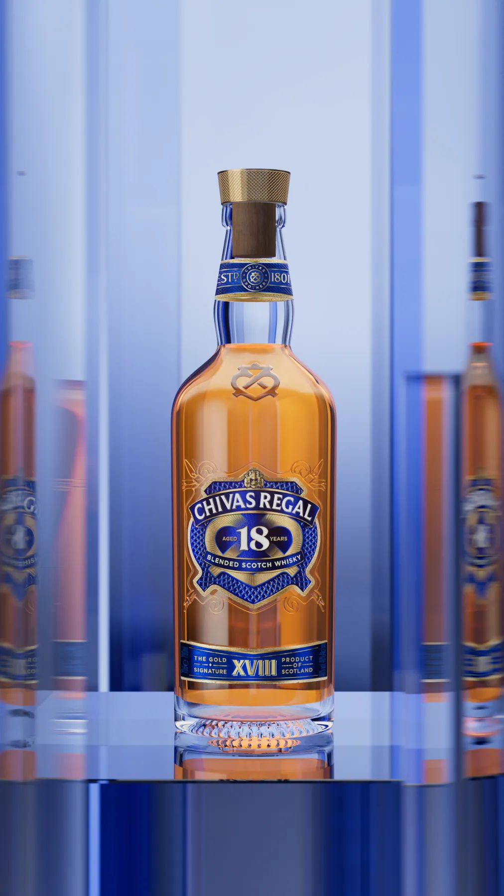
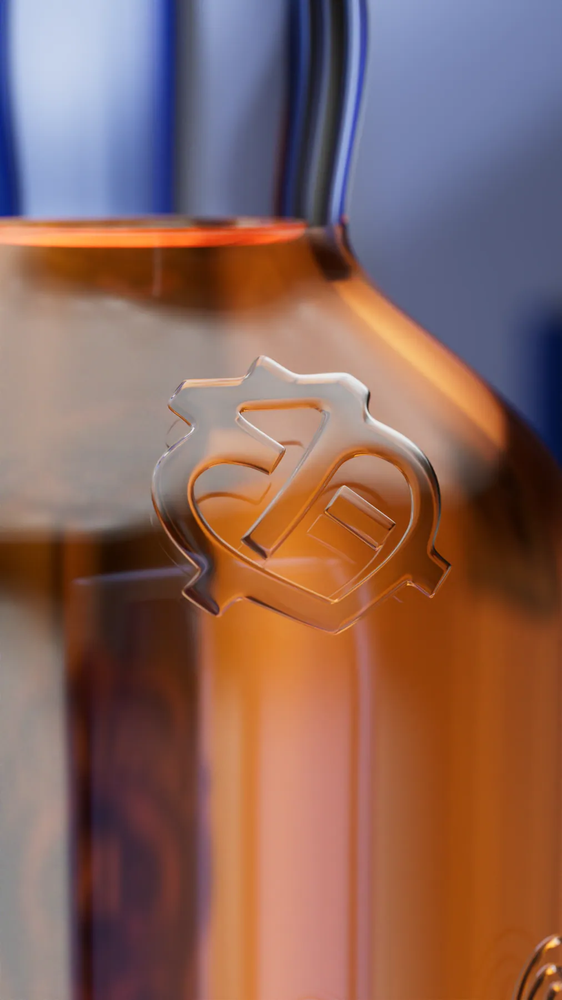
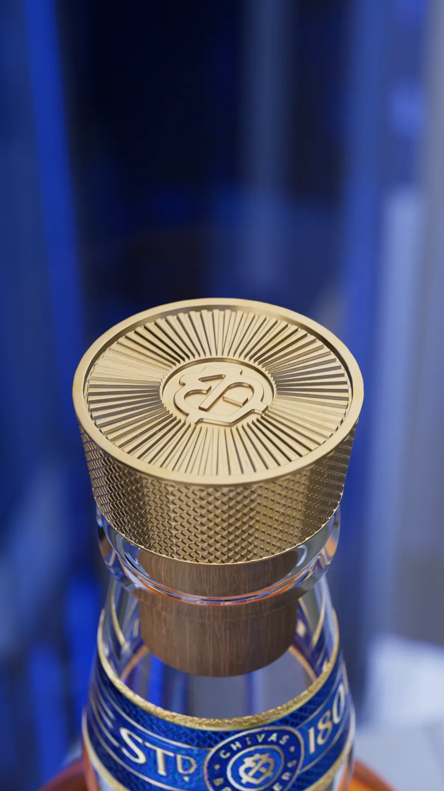
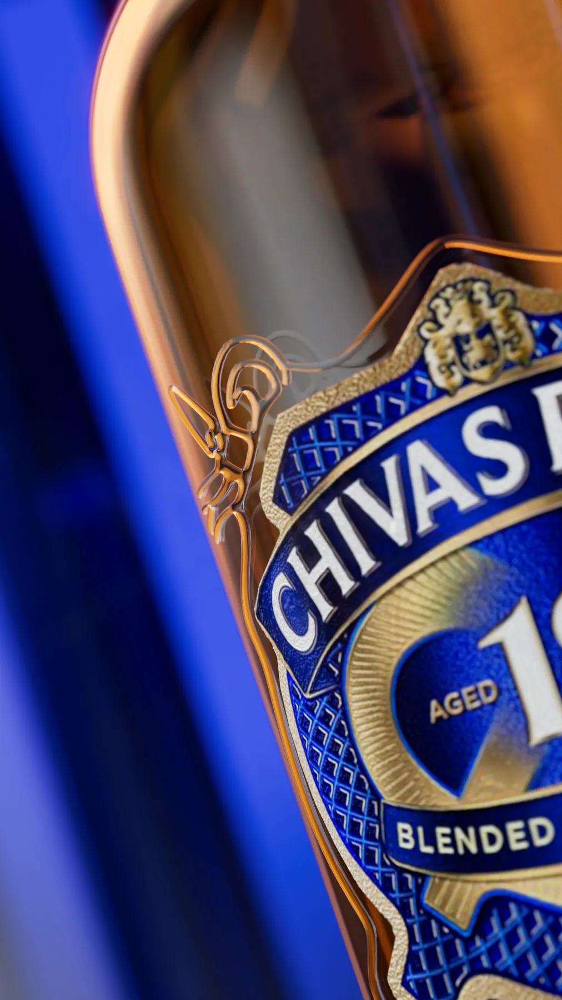
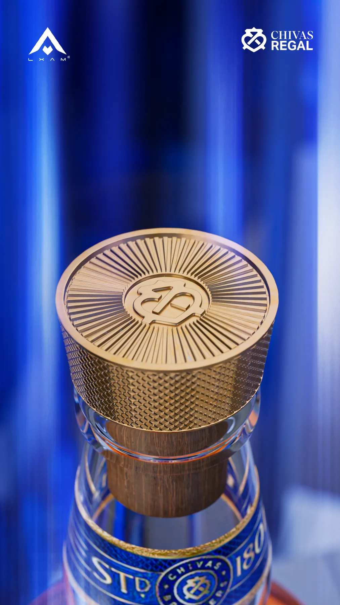
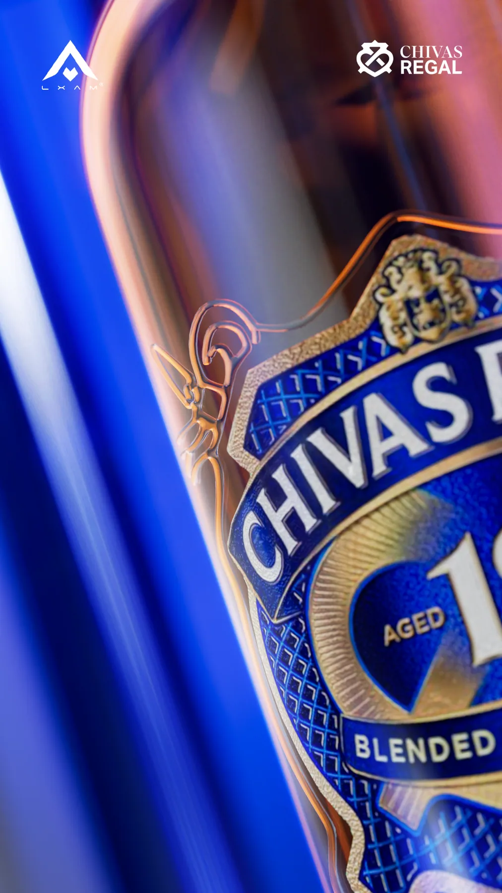

Dự án · Chivas Regal 18 · 2024
Chivas Regal 18: dựng chai XVIII
Một chai rượu là bài khó nhất của render sản phẩm. Thuỷ tinh trong suốt, chất lỏng bên trong khúc xạ ánh sáng, nhãn giấy dập nổi, nắp kim loại khắc hoa văn: bốn chất liệu nằm chồng lên nhau trong vài centimet. Bộ hình này dựng lại toàn bộ chai Chivas Regal 18 trong Blender và đặt nó vào một không gian kính xanh cùng tông với nhãn.
Bài toán
Bốn chất liệu trong một chai
Thuỷ tinh và rượu là hai lớp khác nhau
Ánh sáng đi qua thành chai, vào rượu, rồi lại ra thành chai phía sau. Dựng chai đặc một khối thì rượu trông như nhựa màu. Phải tách thành vỏ thuỷ tinh có độ dày thật và khối chất lỏng riêng bên trong.
Màu hổ phách dễ thành màu cam
Rượu 18 năm có màu hổ phách sâu, không phải cam tươi. Độ đậm của màu phụ thuộc vào quãng đường ánh sáng đi trong rượu, nên chỗ chai dày và chỗ chai mỏng phải ra hai sắc khác nhau.
Nhãn và nắp phải đọc được ở cận cảnh
Nhãn xanh có chữ dập nổi, viền vàng và biểu tượng. Nắp có hoa văn tia khắc chìm và vân nhám quanh cạnh. Ở khung 9:16 trên điện thoại, người xem sẽ phóng to đúng những chỗ đó.
Hình ảnh
Bảy khung hình







Cách làm
Bốn bước
Dựng chai theo ảnh tham chiếu
Thân chai, vai chai và cổ chai dựng theo tỉ lệ thật. Thành thuỷ tinh có độ dày, đáy chai có phần lõm, vì đó là nơi ánh sáng gom lại đẹp nhất.
Tách thuỷ tinh và rượu
Rượu là một khối riêng nằm khít trong vỏ, có mặt thoáng ở cổ chai. Màu hổ phách chỉnh bằng mật độ hấp thụ chứ không tô màu thẳng.
Nhãn và nắp làm chi tiết thật
Chữ dập nổi, viền vàng, hoa văn khắc trên nắp đều là hình khối chứ không phải ảnh dán, để chúng bắt sáng đúng khi máy di chuyển.
Không gian kính cùng tông nhãn
Bối cảnh chỉ gồm các khối kính xanh. Chúng vừa là nền, vừa là nguồn phản chiếu tạo đường viền sáng dọc hai bên chai.
Tiêu chuẩn là thứ bạn giữ khi không ai nhìn.
Muốn làm được shot như thế này?
Đây là đúng những kỹ năng trong lộ trình LXAM Academy, dựng hình, ánh sáng, render tách lớp, dựng phim. Học bằng dự án thật, có người sửa bài.